Candidate List 20260724Last night — ZTF: 4,179 passed basic cuts (178 young) · LSST: 0 passed basic cuts (0 young)Previous Day Next Day
Section 1: New Sources (age<1d) Section 2: Old (1-5d) sources observed last nightplaceholder
Section 1: New Afterglow/FBOT Cands Last Night (3)
1. [ZTF] ZTF18abrskxa (Afterglow?) [Back to Top] [Share] [Trigger Swift] [Fritz Alert] [Fritz Source] [Lasair]RA, Dec: 290.93074, 25.55129 19h23m43.38s, 25d33m4.64sGalactic (l, b): 59.23974, 4.8149 ext(g-r) = 0.609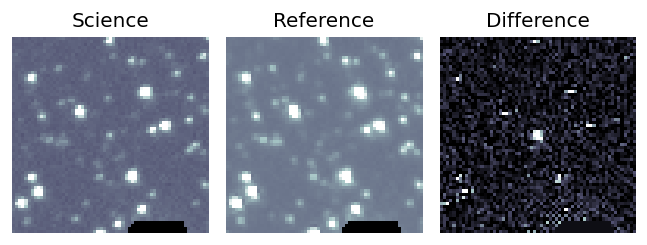
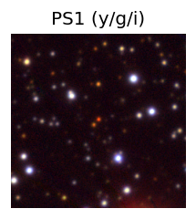
TESS: Sectors [ 14 40 41 54 81 119]
PS1: 1 source in 3 arcsec Closest: d = 0.16 arcsec photoz=0.53+/-1.75 peak abs mag = -24.84
LegacySurvey: 0 sources in 3 arcsec
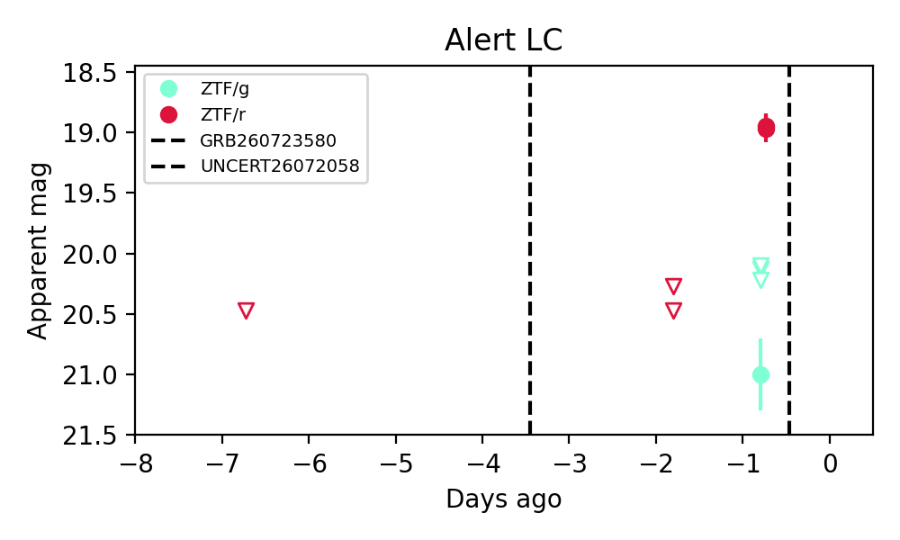
Extinction-corrected gr color:
From alerts: 1.44 +/- 0.31 mag
Consistent with synchrotron, g-r>0!
Rise Rate:
r: 1.43 mag/day
Fade Rate:
2. [ZTF] ZTF26abjcpwv (Afterglow?) [Back to Top] [Share] [Trigger Swift] [Fritz Alert] [Fritz Source] [Lasair]RA, Dec: 269.86665, 51.47088 17h59m28.00s, 51d28m15.16sGalactic (l, b): 79.10629, 28.77388 ext(g-r) = 0.055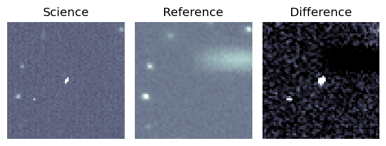
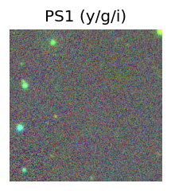
TESS: Sectors [ 14 21 24 25 40 41 51 52 53 54 58 74 78 79 80 81 85 117
119 120]
PS1: 0 sources in 3 arcsec
LegacySurvey: 1 sources in 3 arcsec Closest: d = 3.62 arcsec, 311.3 deg (east of north) photoz=0.77 (68% bounds 0.51, 0.99), type=PSF peak abs mag = -25.34 (68% bounds -24.24, -26.02)
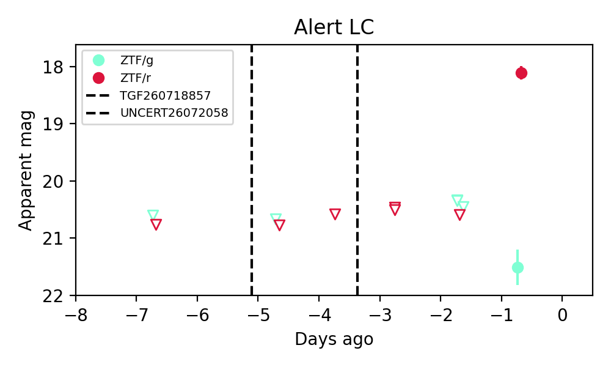
Extinction-corrected gr color:
From alerts: 3.34 +/- 0.33 mag
Consistent with synchrotron, g-r>0!
Rise Rate:
r: 2.43 mag/day
Fade Rate:
3. [ZTF] ZTF26abjhliw (Afterglow?FBOT?) [Back to Top] [Share] [Trigger Swift] [Fritz Alert] [Fritz Source] [Lasair]RA, Dec: 4.30336, 0.36401 0h17m12.81s, 0d21m50.45sGalactic (l, b): 104.88295, -61.30265 WARNING: -1.38 deg from ecliptic plane ext(g-r) = 0.025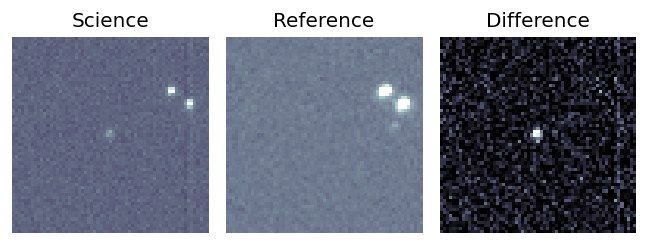
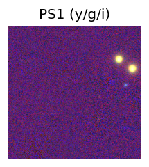
TESS: Sectors [42 70]
PS1: 0 sources in 3 arcsec
LegacySurvey: 1 sources in 3 arcsec Closest: d = 1.42 arcsec, 262.6 deg (east of north) photoz=1.48 (68% bounds 0.82, 2.24), type=REX peak abs mag = -25.77 (68% bounds -24.18, -26.86)
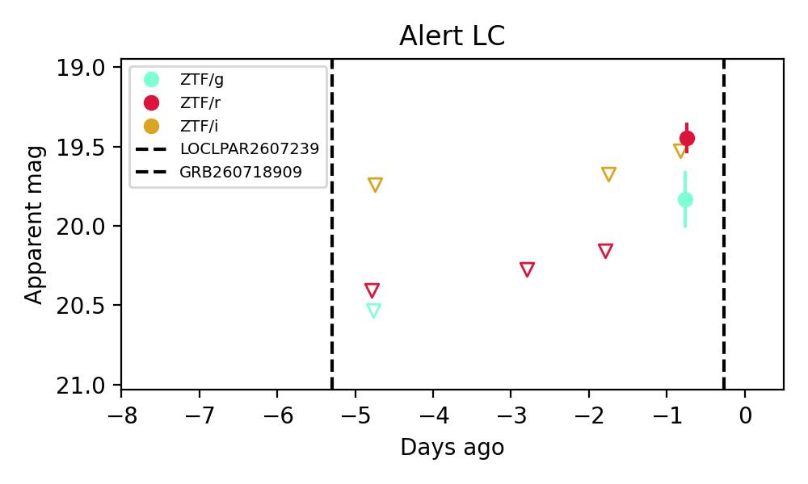
Extinction-corrected gr color:
From alerts: 0.36 +/- 0.2 mag
Extinction-corrected gi color:
From alerts: 0.27 +/- 99 mag
Extinction-corrected ri color:
From alerts: -0.09 +/- 99 mag
Consistent with synchrotron, g-r>0!
Rise Rate:
g: 0.18 mag/day
r: 0.68 mag/day
Fade Rate:
Section 2: Older Sources Observed Last Night (19)
0. [ZTF] ZTF26abhycxx (FBOT?) [Back to Top] [Share] [Trigger Swift] [Fritz Alert] [Fritz Source] [Lasair]RA, Dec: 280.99357, 24.37805 18h43m58.46s, 24d22m40.97sGalactic (l, b): 54.17126, 12.39233 ext(g-r) = 0.127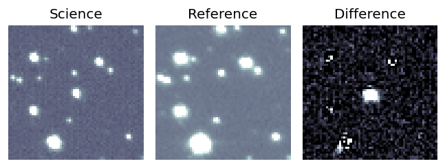
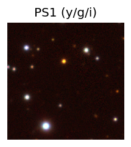

TESS: Sectors [ 26 40 53 54 80 118 119]
PS1: 1 source in 3 arcsec Closest: d = 8.74 arcsec photoz=0.42+/-0.06 peak abs mag = -25.66
LegacySurvey: 0 sources in 3 arcsec
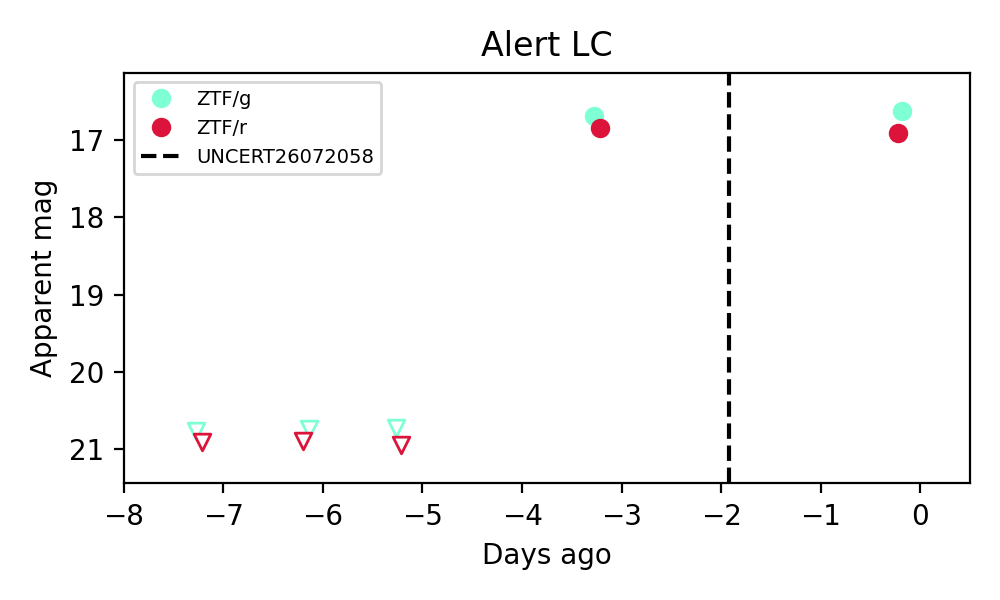
Extinction-corrected gr color:
From alerts: -0.42 +/- 0.06 mag
Rise Rate:
g: 2.02 mag/day
r: 2.04 mag/day
Fade Rate:
r: 0.06 mag/day
1. [ZTF] ZTF26abiqrbt (Afterglow?) [Back to Top] [Share] [Trigger Swift] [Fritz Alert] [Fritz Source] [Lasair]RA, Dec: 265.06953, -15.26501 17h40m16.69s, -15d-15m-54.02sGalactic (l, b): 11.06146, 8.17921 ext(g-r) = 0.441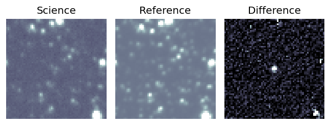
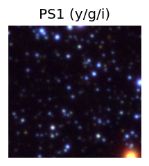
TESS: Sectors [ 92 115 116 118]
PS1: 0 sources in 3 arcsec
LegacySurvey: 0 sources in 3 arcsec
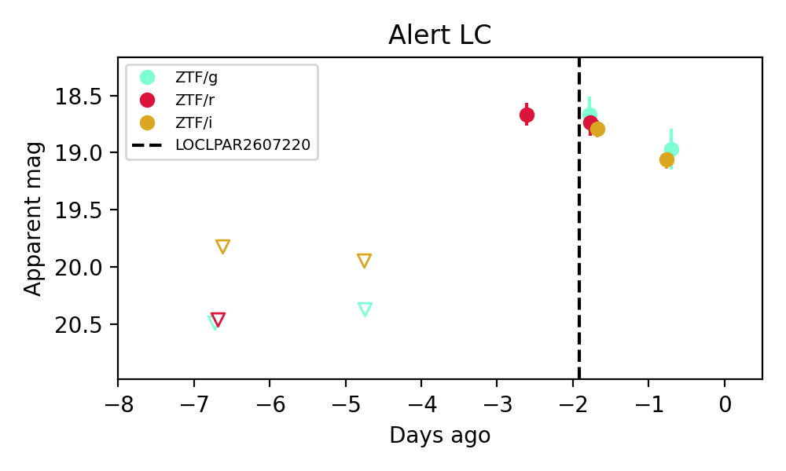
Extinction-corrected gr color:
From alerts: -0.51 +/- 0.19 mag
Extinction-corrected gi color:
From alerts: -0.76 +/- 0.2 mag
Extinction-corrected ri color:
From alerts: -0.29 +/- 0.14 mag
Rise Rate:
g: 0.57 mag/day
r: 0.44 mag/day
i: 0.37 mag/day
Fade Rate:
i: 0.29 mag/day
2. [ZTF] ZTF26abirwwz (Afterglow?) [Back to Top] [Share] [Trigger Swift] [Fritz Alert] [Fritz Source] [Lasair]RA, Dec: 298.80799, 37.20251 19h55m13.92s, 37d12m9.05sGalactic (l, b): 72.72462, 4.64158 ext(g-r) = 0.405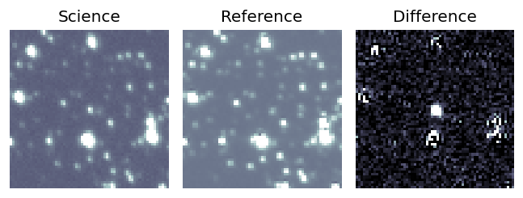
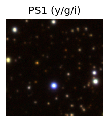
TESS: Sectors [ 14 15 54 55 74 75 81 82 119 120]
PS1: 0 sources in 3 arcsec
LegacySurvey: 0 sources in 3 arcsec
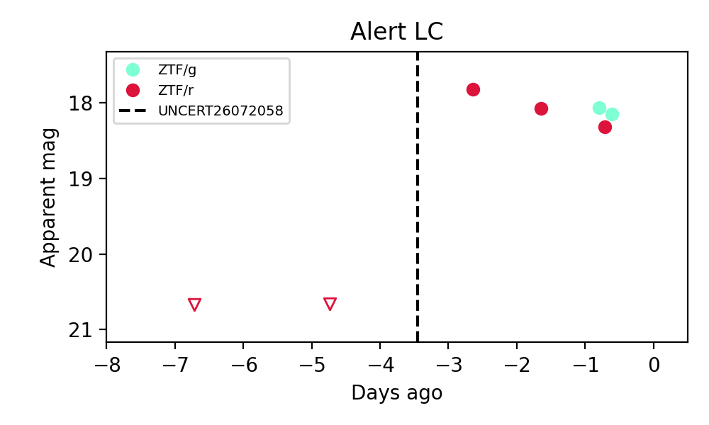
Extinction-corrected gr color:
From alerts: -0.61 +/- 0.07 mag
Rise Rate:
g: 0.34 mag/day
r: 1.36 mag/day
Fade Rate:
r: 0.26 mag/day
3. [ZTF] ZTF26abiwcvm (Afterglow?FBOT?) [Back to Top] [Share] [Trigger Swift] [Fritz Alert] [Fritz Source] [Lasair]RA, Dec: 290.2152, -1.75984 19h20m51.65s, -1d-45m-35.43sGalactic (l, b): 34.72425, -7.34791 ext(g-r) = 0.704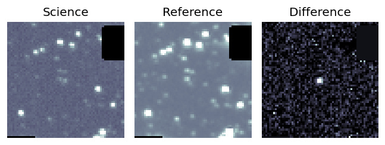
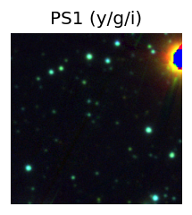
TESS: Sectors [54 80]
PS1: 1 source in 3 arcsec Closest: d = 0.80 arcsec photoz=0.48+/-0.83 peak abs mag = -24.19
LegacySurvey: 0 sources in 3 arcsec
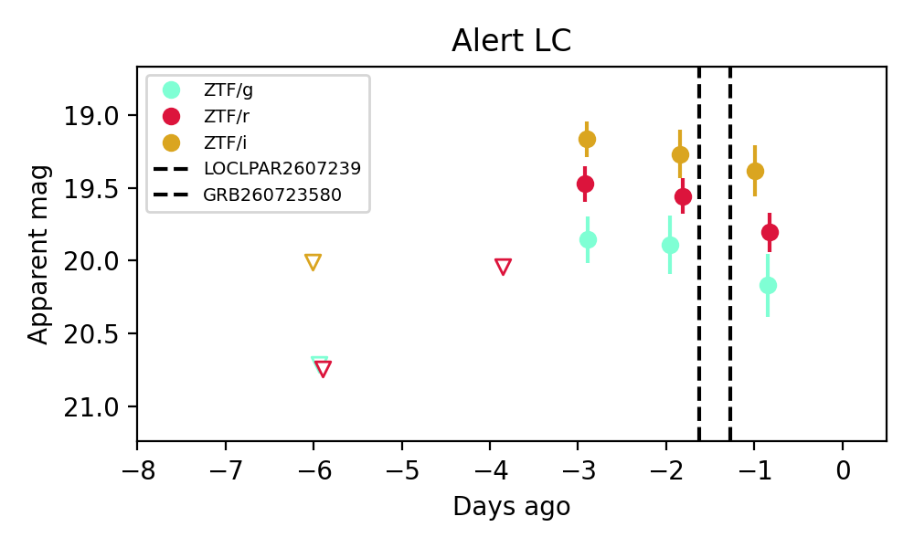
Extinction-corrected gr color:
From alerts: -0.37 +/- 0.24 mag
Extinction-corrected gi color:
From alerts: -0.46 +/- 0.26 mag
Extinction-corrected ri color:
From alerts: -0.09 +/- 0.21 mag
Consistent with synchrotron, g-r>0!
Rise Rate:
g: 0.28 mag/day
r: 0.61 mag/day
i: 0.27 mag/day
Fade Rate:
4. [ZTF] ZTF18adjfcsn (FBOT?) [Back to Top] [Share] [Trigger Swift] [Fritz Alert] [Fritz Source] [Lasair]RA, Dec: 247.57182, 41.46094 16h30m17.24s, 41d27m39.37sGalactic (l, b): 65.57569, 43.40917 ext(g-r) = 0.009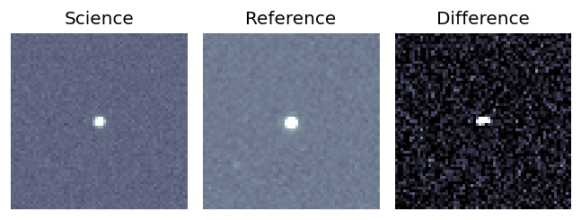
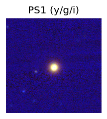
TESS: Sectors [ 24 25 51 52 78 79 117]
PS1: 0 sources in 3 arcsec
LegacySurvey: 1 sources in 3 arcsec Closest: d = 1.27 arcsec, 175.4 deg (east of north) photoz=0.41 (68% bounds 0.29, 0.49), type=PSF peak abs mag = -23.82 (68% bounds -23.0, -24.29)
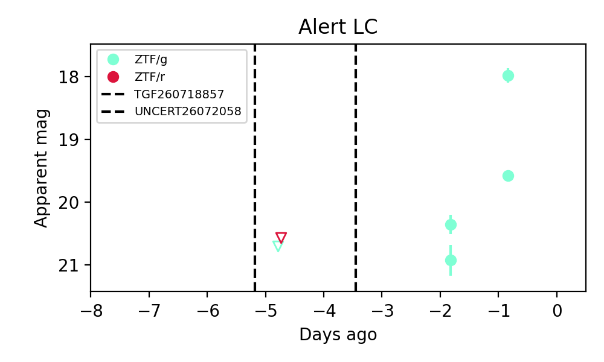
Rise Rate:
g: 1.43 mag/day
Fade Rate:
5. [ZTF] ZTF26abjcibv (FBOT?) [Back to Top] [Share] [Trigger Swift] [Fritz Alert] [Fritz Source] [Lasair]RA, Dec: 264.09151, -16.38808 17h36m21.96s, -16d-23m-17.09sGalactic (l, b): 9.59753, 8.39844 ext(g-r) = 0.412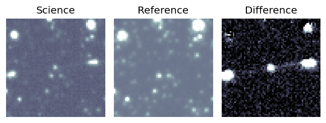
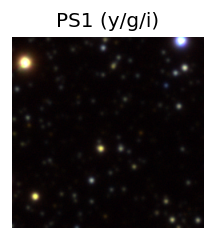
TESS: Sectors [ 91 92 115 116 118]
PS1: 1 source in 3 arcsec Closest: d = 1.84 arcsec photoz=0.26+/-0.10 peak abs mag = -24.53
LegacySurvey: 0 sources in 3 arcsec
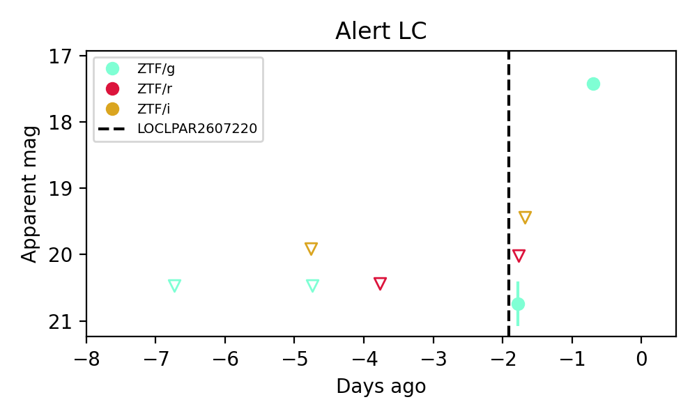
Extinction-corrected gr color:
From alerts: 0.31 +/- 99 mag
Extinction-corrected gi color:
From alerts: 0.67 +/- 99 mag
Rise Rate:
g: 3.06 mag/day
Fade Rate:
6. [ZTF] ZTF26abjcnwv (FBOT?) [Back to Top] [Share] [Trigger Swift] [Fritz Alert] [Fritz Source] [Lasair]RA, Dec: 259.56858, 50.42067 17h18m16.46s, 50d25m14.40sGalactic (l, b): 77.23096, 35.14577 ext(g-r) = 0.029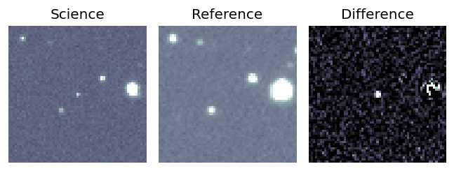
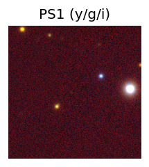
TESS: Sectors [ 24 26 40 51 53 57 78 79 80 84 117 118]
PS1: 0 sources in 3 arcsec
LegacySurvey: 1 sources in 3 arcsec Closest: d = 1.68 arcsec, 116.9 deg (east of north) photoz=0.55 (68% bounds 0.41, 0.74), type=PSF peak abs mag = -22.87 (68% bounds -22.14, -23.67)
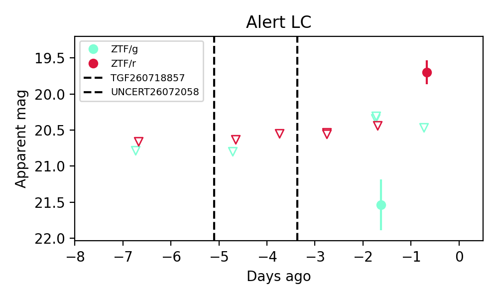
Extinction-corrected gr color:
From alerts: 0.74 +/- 99 mag
Rise Rate:
r: 0.72 mag/day
Fade Rate:
7. [ZTF] ZTF26abjdinc (FBOT?) [Back to Top] [Share] [Trigger Swift] [Fritz Alert] [Fritz Source] [Lasair]RA, Dec: 307.88507, 28.94096 20h31m32.42s, 28d56m27.46sGalactic (l, b): 70.02105, -6.24702 ext(g-r) = 0.687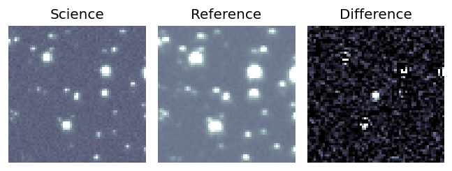
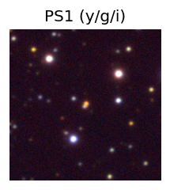
TESS: Sectors [ 14 15 41 55 81 82 120]
SDSS (<15 kpc):Found SDSS phot-z: z=0.08; peak abs mag = -19.82
PS1: 0 sources in 3 arcsec
LegacySurvey: 0 sources in 3 arcsec
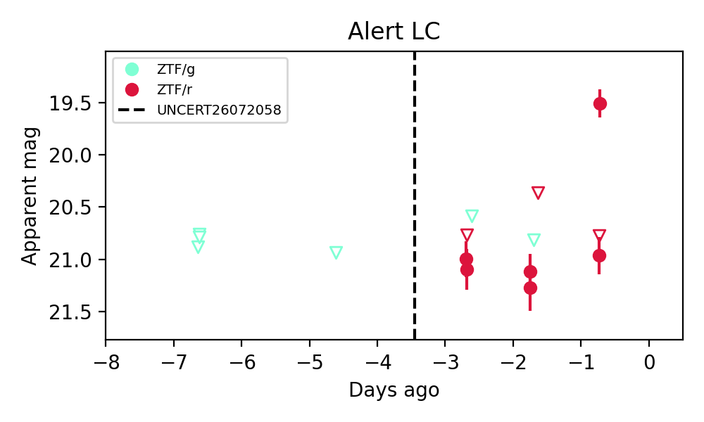
Extinction-corrected gr color:
From alerts: -1.04 +/- 99 mag
Rise Rate:
r: 0.56 mag/day
Fade Rate:
8. [ZTF] ZTF26abjdiqy (Afterglow?) [Back to Top] [Share] [Trigger Swift] [Fritz Alert] [Fritz Source] [Lasair]RA, Dec: 299.83713, 28.49648 19h59m20.91s, 28d29m47.31sGalactic (l, b): 65.72897, -0.62101 ext(g-r) = 2.764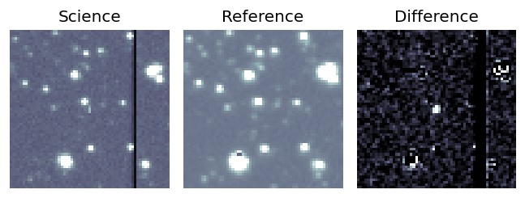
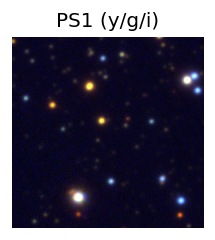
TESS: Sectors [ 14 41 54 55 74 75 81 120]
PS1: 1 source in 3 arcsec Closest: d = 3.88 arcsec photoz=0.82+/-0.42 peak abs mag = -32.85
LegacySurvey: 0 sources in 3 arcsec
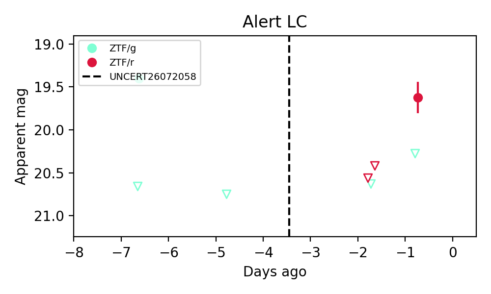
Extinction-corrected gr color:
From alerts: -2.11 +/- 99 mag
Rise Rate:
g: 47.48 mag/day
r: 0.88 mag/day
Fade Rate:
g: 0.73 mag/day
9. [ZTF] ZTF26abjdleg (Afterglow?) [Back to Top] [Share] [Trigger Swift] [Fritz Alert] [Fritz Source] [Lasair]RA, Dec: 328.61399, 34.98305 21h54m27.36s, 34d58m58.96sGalactic (l, b): 86.61987, -15.12506 ext(g-r) = 0.208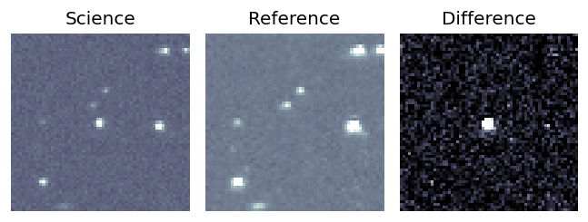
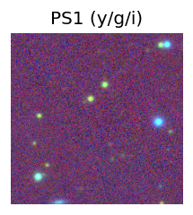
TESS: Sectors [ 15 16 56 83 121]
PS1: 0 sources in 3 arcsec
LegacySurvey: 0 sources in 3 arcsec
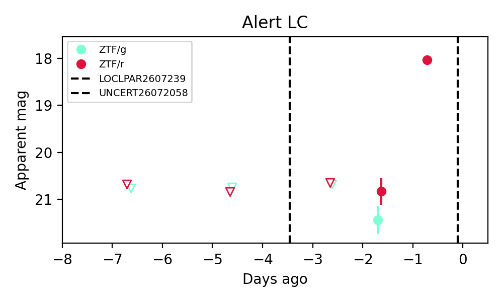
Extinction-corrected gr color:
From alerts: 0.39 +/- 0.41 mag
Consistent with synchrotron, g-r>0!
Rise Rate:
r: 3.05 mag/day
Fade Rate:
10. [ZTF] ZTF26abjdlup (Afterglow?) [Back to Top] [Share] [Trigger Swift] [Fritz Alert] [Fritz Source] [Lasair]RA, Dec: 298.63705, 78.90228 19h54m32.89s, 78d54m8.21sGalactic (l, b): 111.26698, 23.63307 ext(g-r) = 0.131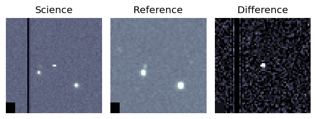
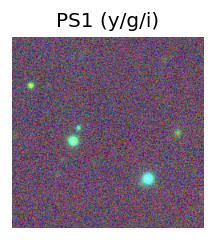
TESS: Sectors [ 17 18 19 20 24 25 26 40 47 50 52 53 54 57 58 59 60 73
74 77 78 79 80 84 85 119]
PS1: 0 sources in 3 arcsec
LegacySurvey: 0 sources in 3 arcsec
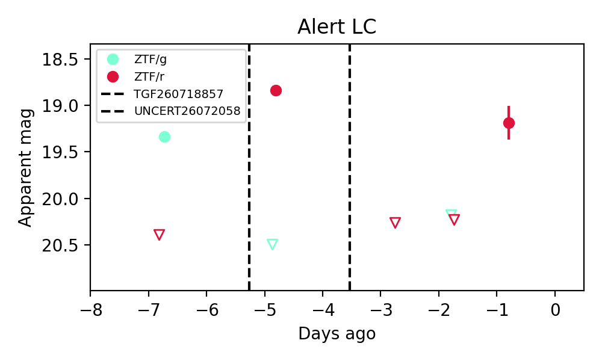
Extinction-corrected gr color:
From alerts: 1.53 +/- 99 mag
Rise Rate:
g: 1.08 mag/day
r: 1.11 mag/day
Fade Rate:
g: 0.63 mag/day
r: 0.7 mag/day
11. [ZTF] ZTF26abjecit (FBOT?) [Back to Top] [Share] [Trigger Swift] [Fritz Alert] [Fritz Source] [Lasair]RA, Dec: 295.87973, 23.97047 19h43m31.14s, 23d58m13.68sGalactic (l, b): 60.02541, 0.1165 ext(g-r) = 8.044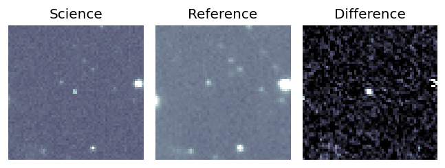
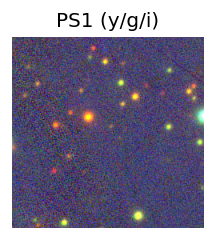
TESS: Sectors [ 14 40 41 54 119 120]
PS1: 1 source in 3 arcsec Closest: d = 1.58 arcsec photoz=1.75+/-0.07 peak abs mag = -43.17
LegacySurvey: 0 sources in 3 arcsec
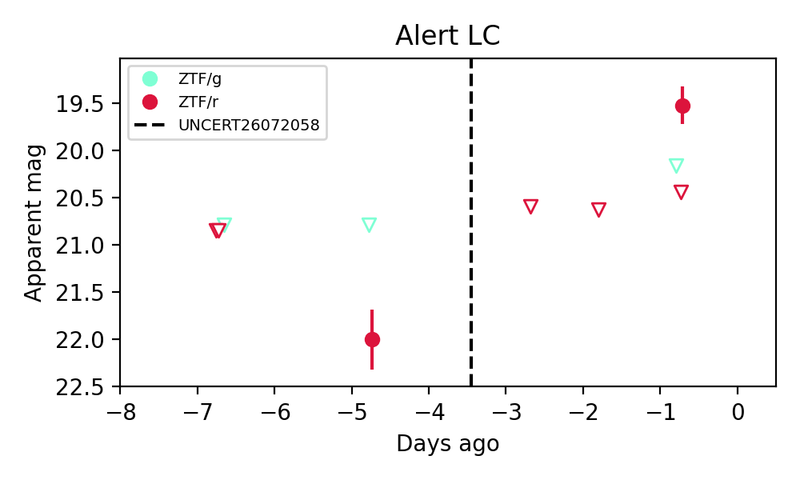
Extinction-corrected gr color:
From alerts: -7.41 +/- 99 mag
Rise Rate:
r: 36.4 mag/day
Fade Rate:
12. [ZTF] ZTF26abjecwv (Afterglow?) [Back to Top] [Share] [Trigger Swift] [Fritz Alert] [Fritz Source] [Lasair]RA, Dec: 332.55284, 46.66624 22h10m12.68s, 46d39m58.48sGalactic (l, b): 96.31883, -7.70582 ext(g-r) = 0.251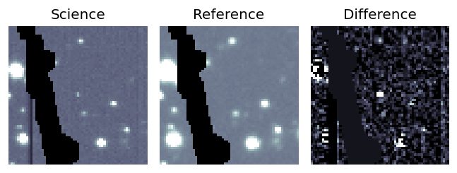
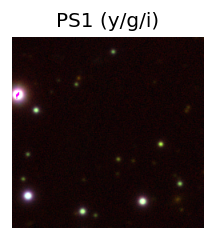
TESS: Sectors [ 16 56 76 77 83 121]
PS1: 1 source in 3 arcsec Closest: d = 9.36 arcsec photoz=0.90+/-0.02 peak abs mag = -24.64
LegacySurvey: 0 sources in 3 arcsec
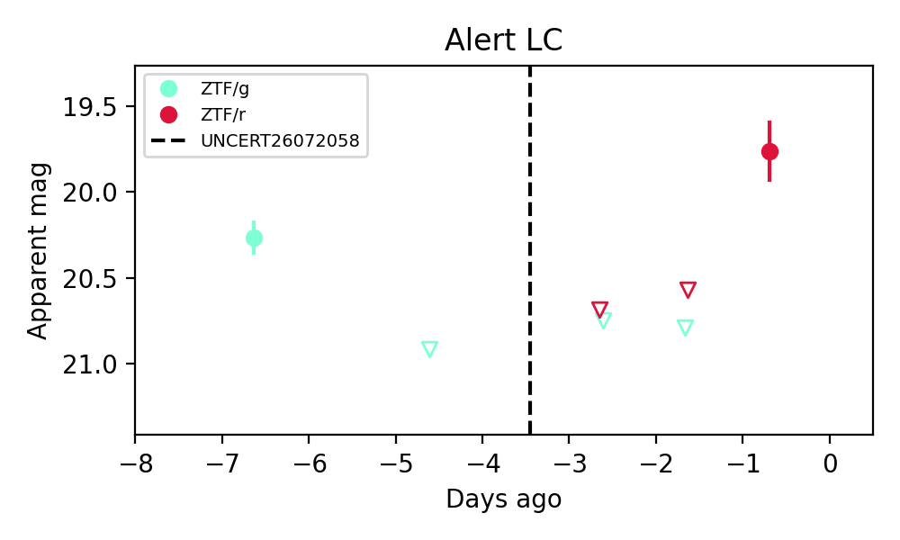
Extinction-corrected gr color:
From alerts: -0.03 +/- 99 mag
Rise Rate:
g: 0.78 mag/day
r: 0.86 mag/day
Fade Rate:
g: 0.32 mag/day
13. [ZTF] ZTF26abjedhq (Afterglow?) [Back to Top] [Share] [Trigger Swift] [Fritz Alert] [Fritz Source] [Lasair]RA, Dec: 334.48521, 39.61514 22h17m56.45s, 39d36m54.49sGalactic (l, b): 93.36205, -14.28479 ext(g-r) = 0.148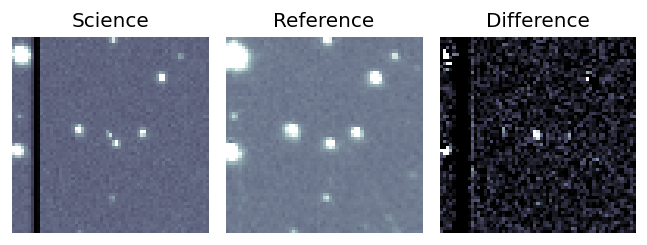
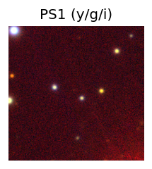
TESS: Sectors [ 16 56 83 121]
SDSS (<15 kpc):Found SDSS phot-z: z=0.94; peak abs mag = -24.64
PS1: 0 sources in 3 arcsec
LegacySurvey: 0 sources in 3 arcsec
Extinction-corrected gr color:
From alerts: -0.98 +/- 99 mag
Rise Rate:
g: 0.15 mag/day
r: 0.92 mag/day
Fade Rate:
g: 47.56 mag/day
14. [ZTF] ZTF26abjfqte (FBOT?) [Back to Top] [Share] [Trigger Swift] [Fritz Alert] [Fritz Source] [Lasair]RA, Dec: 338.03718, -7.70173 22h32m8.92s, -7d-42m-6.24sGalactic (l, b): 56.90936, -51.73304 WARNING: 1.4 deg from ecliptic plane ext(g-r) = 0.054
TESS: Sectors [42 92]
PS1: 0 sources in 3 arcsec
LegacySurvey: 1 sources in 3 arcsec Closest: d = 0.87 arcsec, 217.1 deg (east of north) photoz=0.89 (68% bounds 0.71, 1.06), type=EXP peak abs mag = -25.15 (68% bounds -24.54, -25.61)
Extinction-corrected ri color:
From alerts: 1.61 +/- 99 mag
Rise Rate:
i: 0.31 mag/day
Fade Rate:
15. [ZTF] ZTF26abjiefd (FBOT?) [Back to Top] [Share] [Trigger Swift] [Fritz Alert] [Fritz Source] [Lasair]RA, Dec: 8.50039, -9.22642 0h34m0.09s, -9d-13m-35.13sGalactic (l, b): 109.15981, -71.63041 ext(g-r) = 0.038
TESS: Sectors [ 3 30 70]
SDSS (<15 kpc):Found SDSS phot-z: z=0.41; peak abs mag = -22.19
PS1: 0 sources in 3 arcsec
LegacySurvey: 1 sources in 3 arcsec Closest: d = 0.54 arcsec, 263.1 deg (east of north) photoz=0.43 (68% bounds 0.34, 0.55), type=EXP peak abs mag = -22.24 (68% bounds -21.64, -22.89)
Extinction-corrected gr color:
From alerts: 0.7 +/- 99 mag
Rise Rate:
r: 0.43 mag/day
Fade Rate:
16. [ZTF] ZTF26abjigjm (FBOT?) [Back to Top] [Share] [Trigger Swift] [Fritz Alert] [Fritz Source] [Lasair]RA, Dec: 0.76592, 11.52041 0h 3m3.82s, 11d31m13.49sGalactic (l, b): 104.46242, -49.60868 ext(g-r) = 0.069
TESS: Sectors [42 43 70 83]
SDSS (<15 kpc):Found SDSS phot-z: z=0.29; peak abs mag = -20.54
PS1: 0 sources in 3 arcsec
LegacySurvey: 1 sources in 3 arcsec Closest: d = 0.19 arcsec, 9.3 deg (east of north) photoz=0.18 (68% bounds 0.11, 0.24), type=EXP peak abs mag = -19.28 (68% bounds -18.21, -19.97)
Extinction-corrected gr color:
From alerts: 0.11 +/- 0.31 mag
Extinction-corrected gi color:
From alerts: 0.24 +/- 0.33 mag
Extinction-corrected ri color:
From alerts: 0.13 +/- 0.31 mag
Consistent with synchrotron, g-r>0!
Rise Rate:
r: 0.22 mag/day
Fade Rate:
17. [ZTF] ZTF26abjiimb (FBOT?) [Back to Top] [Share] [Trigger Swift] [Fritz Alert] [Fritz Source] [Lasair]RA, Dec: 10.59208, 5.23658 0h42m22.10s, 5d14m11.69sGalactic (l, b): 118.71983, -57.56097 WARNING: 0.63 deg from ecliptic plane ext(g-r) = 0.039
TESS: Sectors 70
SDSS (<15 kpc):Found SDSS phot-z: z=0.56; peak abs mag = -24.26
PS1: 0 sources in 3 arcsec
LegacySurvey: 1 sources in 3 arcsec Closest: d = 2.99 arcsec, 17.2 deg (east of north) photoz=0.27 (68% bounds 0.2, 0.43), type=REX peak abs mag = -22.34 (68% bounds -21.61, -23.48)
Extinction-corrected gr color:
From alerts: -1.15 +/- 99 mag
Extinction-corrected ri color:
From alerts: -1.43 +/- 99 mag
Rise Rate:
r: 2.92 mag/day
Fade Rate:
18. [ZTF] ZTF26abjjhyi (Afterglow?) [Back to Top] [Share] [Trigger Swift] [Fritz Alert] [Fritz Source] [Lasair]RA, Dec: 65.21148, 40.61995 4h20m50.76s, 40d37m11.81sGalactic (l, b): 160.1653, -6.64764 ext(g-r) = 0.751
TESS: Sectors [19 59 86]
NED (10 arcsec):Found NED spec-z: z=0.01; peak abs mag = -15.73
PS1: 0 sources in 3 arcsec
LegacySurvey: 0 sources in 3 arcsec
Rise Rate:
Fade Rate:
r: 0.48 mag/day